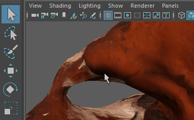

通过单击面板工具栏上的  图标或选择“视图 > 锁定摄影机”(View > Lock Camera)，可以锁定当前选定的摄影机。这样可以避免意外更改摄影机位置并进而更改动画。
图标或选择“视图 > 锁定摄影机”(View > Lock Camera)，可以锁定当前选定的摄影机。这样可以避免意外更改摄影机位置并进而更改动画。
图标或选择“视图 > 锁定摄影机”(View > Lock Camera)，可以锁定当前选定的摄影机。这样可以避免意外更改摄影机位置并进而更改动画。

锁定摄影机后，其变换信息（即：摄影机的“平移”(Translate)和“旋转”(Rotate)特性）不能调整。对于正交摄影机，“正交宽度”(Orthographic Width)也会被锁定。
若要覆盖任何值的锁定设置，请在属性上单击鼠标右键，然后选择“解除锁定属性”(Unlock Attribute)。若要再次重新锁定该属性，请单击鼠标右键并选择“锁定属性”(Lock Attribute)。
锁定“摄影机、目标和上方向”(Camera, Aim and Up)摄影机后，其定位器也会被锁定。锁定立体摄影机后，根摄影机始终处于锁定状态。
摄影机的锁定或解锁状态通过此图标反映出来。当任何或所有变换属性解除锁定后，该图标指示解锁状态。锁定图标和菜单仅当通过摄影机查看时才可用，否则将被禁用（例如，通过定位器或灯光查看时将禁用）。
还可以使用带 lockTransform 标志的 camera 命令锁定或解除锁定任何摄影机。将此标志设置为 true 将锁定，设置为 false 将解除锁定。
提示：
可以通过“热键编辑器”(Hotkey Editor)为“视图 > 锁定摄影机”(View > Lock Camera)指定热键。选择“窗口 > 设置/首选项 > 热键编辑器”(Windows > Settings/Preferences > Hotkey Editor)以打开“热键编辑器”(Hotkey Editor)，然后从“为以下项编辑热键”(Edit Hotkeys For)下拉列表中选择“其他项目”(Other items)，并展开“视口菜单”(Viewport Menus)类别。